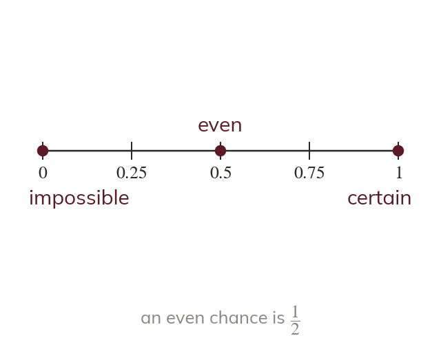
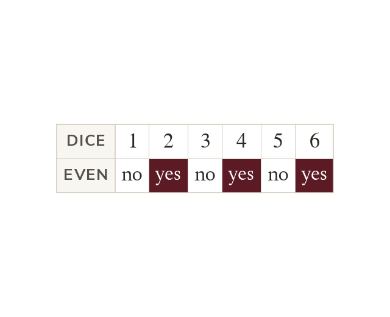
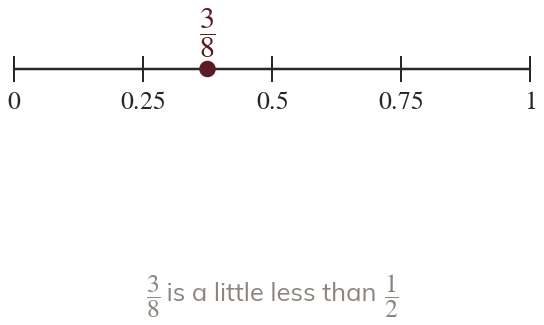
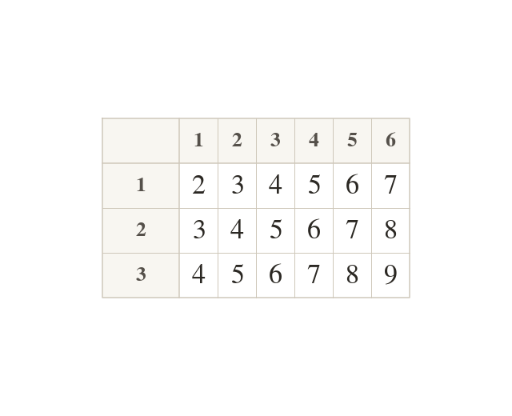
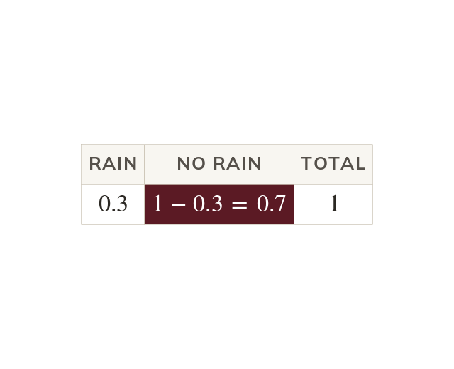
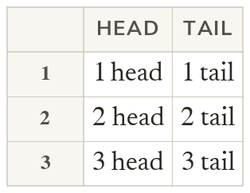
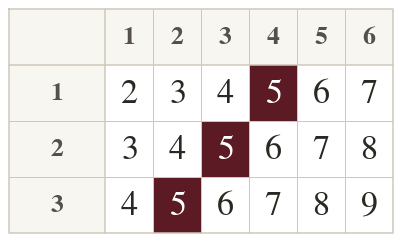

From to
A probability is a number from to
means impossible and means certain. An even chance is
A probability is a number from to where means impossible, means certain and means an even chance.
Games, weather forecasts and insurance all rest on how likely things are. Today we find probabilities by listing every possible outcome.
Work down the page at your own pace. Write every answer in your book first, then click to check it.
Read each card, then follow the worked examples one step at a time.

A probability is a number from to
means impossible and means certain. An even chance is

With equally likely outcomes, P(event) is the outcomes in the event over all outcomes. A dice has even numbers out of so P(even)

Pick an answer. If it's wrong, the feedback tells you which mistake it was.
Read each card, then follow the worked examples one step at a time.

For two events, a grid lists each outcome once. A to spinner and a dice give
Each cell shows their total.

The probabilities of all the outcomes add up to
So P(not happening) - P(happening).


Pick an answer. If it's wrong, the feedback tells you which mistake it was.
Finished? Next lesson: 10.23.5 Relative and Expected Frequency.
Log in, then search for a code to practise that skill.